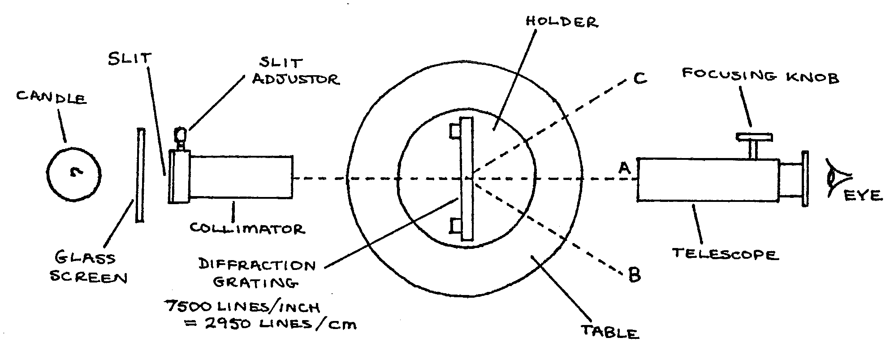
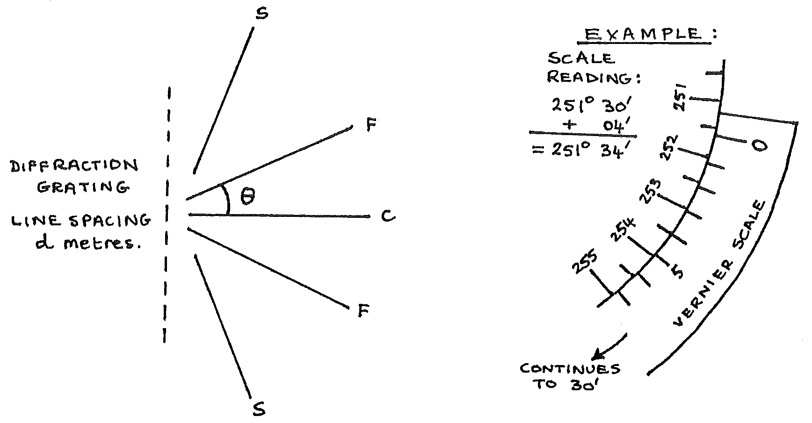

E3-1: Finding the Wavelength of Sodium Light Using a Diffraction Grating and Spectrometer¶
Apparatus¶
NB: A darkened room is required.
Spectrometer (set up and adjusted); diffraction grating; glass screen; candle in holder; matches; wire loop and a Sodium salt

Procedure¶
- Essential precautions: Do not touch the collimator or telescope lenses or the glass of the diffraction grating. Keep the glass screen between the candle flame and the slit. Take care with this delicate apparatus.
- Without the diffraction grating on the table, place the telescope at \(A\). Adjust focusing and candle position until the slit is visible through the telescope.
- Replace the diffraction grating as above. The slit should still be visible through the telescope. Move the telescope towards \(B\) until a spectrum is seen. If none is seen, check that little direct light is falling on the apparatus. Otherwise seek help.
- Burn some Sodium salt in the candle flame using the wire loop. Move the telescope to place the cross-wires on the bright yellow (Sodium) lines. Read the angle on one of the vernier scales \(\Theta_1\).
- Move the telescope towards \(C\). Repeat step 4., reading the angle from the same vernier scale \(\Theta_2\).
Observations¶
In the below diagram, you are to measure \(\Theta\) both above and below the central bright line \(C\).
\(\Theta_1 =\) ____° ____’
\(\Theta_2 =\) ____° ____’

Theory¶
In the above diagram:
From the readings:
Take care to calculate \(\Theta\) correctly if your vernier scale moved through 0° when moving from \(\Theta_1\) to \(\Theta_2\) .
The spectrometer apparatus takes advantage of the fact that the wavelength ( \(\lambda\)) of Sodium light is diffracted from a straight path by the small openings in the diffraction grating, and the relationship between the size of the grating, the wavelength of light, and the angle of diffraction follows a known equation. Then:
Analysis¶
Use your observations and the theory to find the \(\lambda\) of Sodium light. Use your text or assigned reading on spectrometry of light. Find \(\lambda\) of sodium light from your research and compare this with your value from the experiment. Use the average \(\lambda\) of the two brightest yellow lines that you observed.
Questions¶
- Why did you see the Sodium spectrum and a continuous spectrum?
- Calculate the energy of a photon of yellow light from hot sodium. (\(h 6.6 \times 10^-34 ` Js; :math:`c = 3 \times 10^8 ` ms\ :math:`^-1\)).
- An electric Sodium lamp rated at 40W is approximately 20% efficient in producing visible light. Assuming that all the light produced is at the wavelength you calculated above, how many photons per second are given out by the lamp?
- Draw a diagram to illustrate the change in energy state of a Sodium atom when emitting a photon of yellow light. If the lower energy state is \(x\) eV, what is the upper energy state in eV? (\(e = 1.6 \times 10^-19\) C).